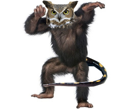

Startseite
Schon die Gebrüder Grimm erwähnten die "wunderlich gezeichnete Eule" aus der Schweiz, die "so schnell wie ein Affe dahinschwingt" und "auf der Zunge zergeht": Die Affenmolcheule. Informieren Sie sich hier über diese interessante, und leckere, Spezialität.
Woher stammt eigentlich der Name "Affenmolcheule"?
Der Gebrauch des Names "Affenmolcheule" lässt sich in den Schweizer Chroniken bis in die zwanziger Jahre zurückverfolgen. Wofür das Amphib Molch im Namen steht, lässt sich allerdings nicht mehr ermitteln. Es könnte ebenso für das ausgeprägte Fell stehen wie für ihre Augen. Versuche haben gezeigt, dass eine Affenmolcheule genau so schnell fliegen kann wie ein moderne Drohne des US-Militärs. Auch an den Regenwald der Schweiz ist die Affenmolcheule perfekt angepasst und kann sich "wie ein Affe" von Baum zu Baum schwingen. Die Affenmolcheule ist jederzeit durchgetrainiert und hat deshalb einen sehr hohen Muskelanteil. Über 30% ihres Körpergewichtes stammt von den Muskeln.
Internes Wiki
Für weitere Informationen können sie auch auf unserer Wikipedia-Seite vorbeischauen Affenmolcheule. Für unsere eigene Wikiseite, klicken sie hier: Internes Affenmolcheulen-Wiki.
Exquisites Aussehen
Hier sehen sie eine echte Affenmolcheule. Man sieht genau aus welchen Tieren die Kreuzung gemacht wurde.
Drei verschiedene Arten von Haut
Die Affenmolcheule besitzt drei verschiedene Arten von Haut. Die Lederhaut des Molches, das zerzauste Fell des Affen und das Flauschige und kurze Haar der Eule.
Spezialität des Schweizer Regenwaldes
Wer hätte gedacht das die Schweiz, neben Käse, Schokolade und Videospielen, auch das zarte Fleisch der Affenmolcheule exportiert. Die Affenmolcheule tritt ausschliesslich im Schweizerischen Regenwald auf und wird hier auch seit mehreren Generationen gezüchtet. Populär wurde die Affenmolcheule, als man sie zum schmuggeln von Kokain über die US-Amerikanische Grenze verwendete. Das Käse-Kartell in der Schweiz verwendet die Affenmolcheule übrigens auch als Wappentier.
Tradition verpflichtet
Der Affenmolcheulen Zuchtbetrieb in Zürich, hat sich bereits vor achtzig Jahren ganz der Affenmolcheule verschrieben. Erfahren Sie auf unseren Seiten mehr über unsere modernen Zuchtanlagen. Impressum.
Zarte Verführung
In der Schweizer Küche ein Klassiker, hat sich die Affenmolcheule in den letzten Jahren zu einem Geheimtipp in Feinschmeckerkreisen entwickelt. Auf unserer Seite mit Rezepten für die Affenmolcheule finden Sie Anregungen für die Zubereitung.